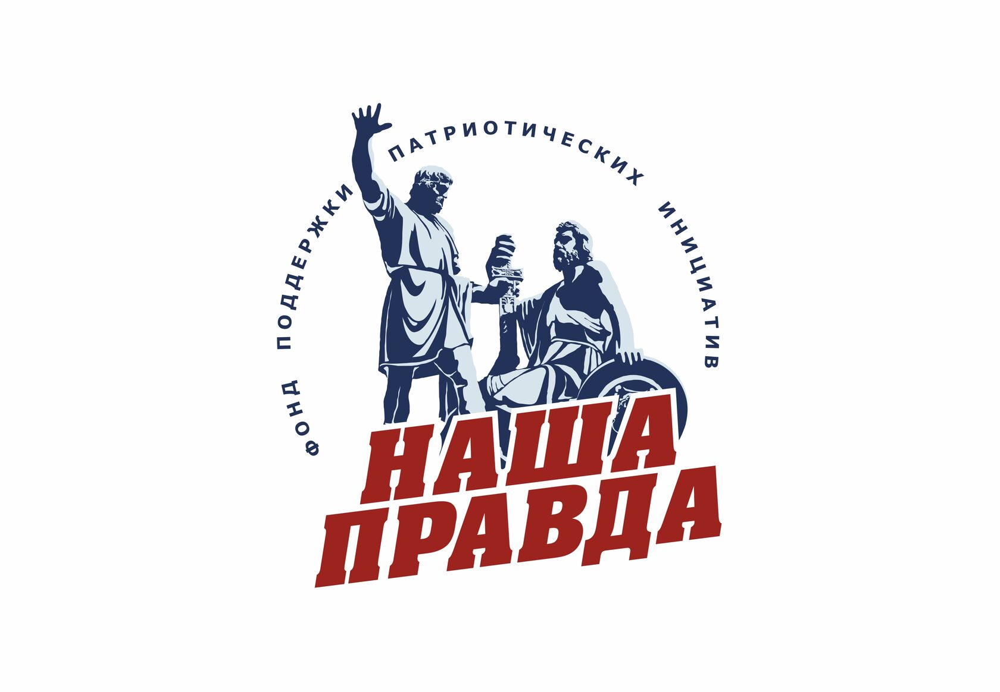

Company profile · РОЙ.МАРКЕТ investigation

At a glance
Ownership & corporate history
| Value | As of | Note |
|---|---|---|
| Бровченко Александр Руфинович | 2023-03-21 | Генеральный директор, личный ИНН 501105677892, ГРН 1237700218612, 21.03.2023 — unchanged as of 15.08.2026 [s0221] |
| Value | As of | Note |
|---|---|---|
| Фонд региональных некоммерческих проектов «ДАР» и Некоммерческий фонд содействия сохранению историко-культурного наследия «Градислава» | 2026-09-08 | Наша Правда's own official site (о фонде section) self-describes as a joint project of these two funds — a first-party admission, not press attribution. Verbatim: «Фонд "Наша Правда" - это совместный проект Фонда региональных некоммерческих проектов "ДАР" и Некоммерческого фонда содействия сохранению историко-культурного наследия "Градислава", направленный на поддержку военнослужащих и граждан на территории СВО.» Resolves open_questions.json src015 — the EGRUL/устав route to this fact is structurally blocked (a Фонд's founders aren't published in a standard EGRUL extract, and Наша Правда's founding устав is paper-only, not digitized, per territorial ФНС response 2026-09-08), but this self-published statement is independently as strong as any registry document short of the устав itself. [s7370] |
| Value | As of | Note |
|---|---|---|
| 115172, Москва, вн.тер.г. муниципальный округ Таганский, наб. Котельническая, д. 25, стр. 1, офис 18 комната 5 | 2023-03-21 | ГРН 1237700218612, 21.03.2023 — address at registration, unchanged as of the 15.08.2026 extract [s0221] |
Financials
| Year | Revenue | Profit | Source |
|---|---|---|---|
| 2024 | — | ₽14,700,000 | [s0389] |
| 2025 | — | ₽22,320,000 | [s0390] |
Sanctions & screening
[s0575]
Web & social presence
Images
Principals & persons of interest
Open questions
Sources cited in this profile
| ID | Type | Locator | Captured | As of |
|---|---|---|---|---|
| s0221 | EGRUL extract | EGRUL extract (ul-1237700218612-20260815010023.pdf) | — | 2026-08-15 |
| s0389 | БФО annual-accounts filing | БФО annual-accounts filing (РЕСУРС_БФО_9705196180_2024_20260815.zip) | 2026-08-15 | 2024-12-31 |
| s0390 | БФО annual-accounts filing | БФО annual-accounts filing (РЕСУРС_БФО_9705196180_2025_20260815.zip) | 2026-08-15 | 2025-12-31 |
| s0575 | OpenSanctions screening record | OpenSanctions screening record (OPENSANCTIONS_9705196180_20260824_fond-nasha-pravda.json) | 2026-08-24 | — |
| s7370 | transcript | transcript (TRANSCRIPT_20260908_nasha-pravda-official-site.html) | 2026-09-08 | — |
| s7538 | site capture | site capture (SITE_9705196180_20260916_fond-nasha-pravda-logo.jpg) | 2026-09-16 | — |
Generated from this investigation's registry (data/registry/) by scripts/build_company_profile.py. Not a substitute for reading the underlying primary sources listed above.